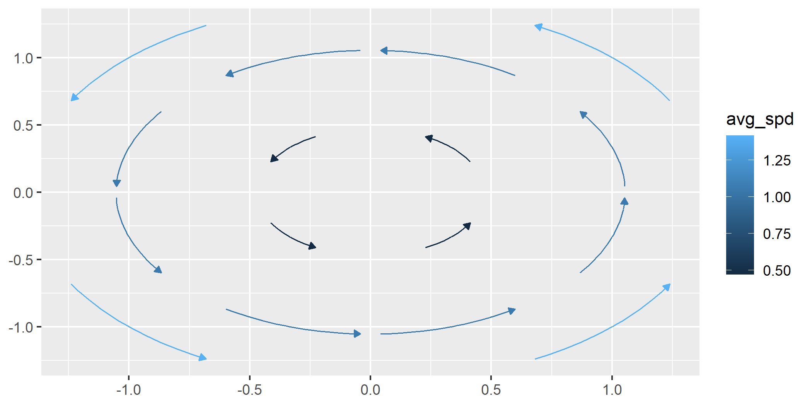

Overview
ggvfields provides tools for visualizing vector fields, stream plots, and soon complex numbers and more.
remotes::install_github("dusty-turner/ggvfields")
library("ggvfields")
#> Loading required package: ggplot2
options(ggplot2.continuous.colour="viridis")Usage
geom_vector_field()
The geom_vector_field() function generates a vector field plot layer using a user-defined function to compute the vector components. This function abstracts away the mathematical computations required to generate the vector field, so the user does not need to manually calculate and input the vector components into geom_segment(). It simplifies the process, making it easier to create vector field visualizations without dealing with the underlying math.
f <- function(v) {
x <- v[1]; y <- v[2]
c(-y, x) # = f(x,y)
}
ggplot() +
geom_vector_field(fun = f, xlim = c(-10, 10), ylim = c(-10, 10)) +
coord_fixed() 
This function allows the user to map several characteristics of the vector field to different aesthetic mappings.
Norm
The norm of a vector is given by:
We can visualize the norm by mapping the value of the norm to the color aesthetic.
ggplot() +
geom_vector_field(
aes(color = after_stat(norm)),
fun = f, xlim = c(-10, 10), ylim = c(-10, 10)) +
coord_fixed()
Divergence
Divergence is an operation on a vector field that tells us how the field behaves toward or away from a point. Locally, the divergence of a vector field in at a particular point is a measure of the “outflowing-ness†of the vector field at that particular point. The divergence of a vector field results in a scalar function.
If is a vector field in , then the divergence of is defined by:
To visualize the divergence of the vector field:
ggplot() +
geom_vector_field(
aes(color = after_stat(divergence)),
fun = f, xlim = c(-10, 10), ylim = c(-10, 10)
) +
coord_fixed()
Curl
Curl is an operation on a vector field that measures the rotation or swirling strength at a point. In two dimensions, the curl of a vector field in is a scalar value that indicates how much the vector field tends to rotate around that point.
If is a vector field in , then the curl of is defined by:
To visualize the the curl:
ggplot() +
geom_vector_field(
aes(color = after_stat(curl)),
fun = f, xlim = c(-10, 10), ylim = c(-10, 10)
) +
coord_fixed()
Laplace Operator
The Laplace operator (or Laplacian) measures the rate at which the average value of a function around a point differs from the value at that point. It is commonly used to understand how a scalar field spreads out or compresses in space.
If is a vector field in , then the Laplacian of is defined by taking the sum of the second partial derivatives of each component of the vector field.
The Laplacian of the vector field is thus given by:
This results in a scalar value that describes how the vector field spreads out or compresses at different points in the field.
To visualize the Laplace operator of the vector field, lets look at a different vector field:
g <- function(v) {
x <- v[1]
y <- v[2]
c(-sin(y), cos(x))
}
ggplot() +
geom_vector_field(
aes(color = after_stat(laplacian)),
n = 15,
fun = g, xlim = c(-2*pi, 2*pi), ylim = c(-2*pi, 2*pi)
) +
coord_fixed() 
Directional Derivative
The directional derivative of a vector field measures the rate of change of the field in a specified direction. It provides insight into how the field varies as you move in a particular direction.
If is a vector field in , and is a direction vector, then the directional derivative of in the direction of is given by:
For a vector field, this represents the rate of change of each component of the field in the direction specified by .
To visualize the Laplace operator of the vector field:
vec <- c(5, 6)
ggplot() +
geom_vector_field(
aes(color = after_stat(directional_derivative)),
fun = f, xlim = c(-10, 10), ylim = c(-10, 10),
v = vec) +
geom_point(aes(x = vec[1], y = vec[2])) +
coord_fixed() 
Aesthetics In Development
Another aesthetic in development available for mapping is length. The length aesthetic maps the value of the computed measure to the length of the vector.
ggplot() +
geom_vector_field(
aes(length = after_stat(norm), color = after_stat(norm)),
fun = f, xlim = c(-10, 10), ylim = c(-10, 10)) +
coord_fixed() +
theme(legend.box = "horizontal")
geom_streamplot()
The geom_streamplot() function generates a stream plot layer of a user-defined vector field function. The lines in the plot represent the flow of data points through the vector field.
f <- function(v) {
x <- v[1]
y <- v[2]
c(-1 - x^2 + y, 1 + x - y^2)
}
ggplot() +
geom_streamplot(
fun = f, xlim = c(-3, 3), ylim = c(-3, 3),
) +
coord_fixed() +
theme_minimal()
The chop parameter (defaulted to TRUE) allows you to chop the trajectories into segments. This can be useful for better visualization of the streamlines when they are long and complex.
It may be useful to not break up the streamlines.
ggplot() +
geom_streamplot(
fun = f, xlim = c(-3, 3), ylim = c(-3, 3),
chop = FALSE
) +
coord_fixed() +
theme_minimal()
It may also be useful to break up the streamlines into more segments. The scale_stream parameter (defaults to 1) adjusts the segmentation of streamlines by specifying the proportion of the streamline length used to divide it into smaller segments.
ggplot() +
geom_streamplot(
fun = f, xlim = c(-3, 3), ylim = c(-3, 3),
chop = TRUE, scale_stream = .9,
) +
coord_fixed() +
theme_minimal()
Animate geom_streamplot()
# Create stream plot with rownum aesthetic
p <- ggplot() +
geom_streamplot(
aes(rownum = after_stat(rownum)),
fun = f, xlim = c(-3, 3), ylim = c(-3, 3)
) +
coord_fixed() +
theme_bw()
# Create an animation transition plot
anim <- animation_transition(plot = p) +
gganimate::transition_reveal(rownum) +
gganimate::ease_aes('linear')
# Animate the plot
gganimate::animate(anim, nframes = 25, fps = 5, end_pause = 0, renderer = gganimate::gifski_renderer())
#> `geom_path()`: Each group consists of only one observation.
#> ℹ Do you need to adjust the group aesthetic?
#> `geom_path()`: Each group consists of only one observation.
#> ℹ Do you need to adjust the group aesthetic?
The mask_shape_type parameter allows you to specify the mask shape used for streamline generation which influences how the streamlines are placed and how closely they can approach each other. The default mask shape is "square", but you can also use "diamond", "inset_square", or "circle". During streamline generation, when a streamline enters the specified shape, no other streamlines will enter that region.
- Square Mask (default): Streamlines are restricted to a grid where each cell is a square. This generally results in evenly spaced streamlines.
- Diamond Mask: Streamlines are restricted to a square grid with diamonds inset within each square. This can create a more dense pattern which can have better visualizations for some functions. - Inset Square Mask: Streamlines are restricted to a grid with smaller squares inset within larger squares. This can create a denser and more detailed pattern of streamlines.
- Diamond Mask: Streamlines are restricted to a square grid with diamonds inset within each square. This can create a more dense pattern which can have better visualizations for some functions. - Circle Mask: Streamlines are restricted to a grid with inset circles inside the square grid.
ggplot() +
geom_streamplot(aes(group = after_stat(id)),
fun = f, xlim = c(-3, 3), ylim = c(-3, 3), max_length = 10000,
max_steps = 10000, ds = .05, min_dist = .25,
mask_shape_type = "diamond") +
coord_fixed() +
theme_minimal()
#> Warning in geom_streamplot(aes(group = after_stat(id)), fun = f, xlim = c(-3, :
#> Ignoring unknown parameters: `max_length`, `max_steps`, and `min_dist`
geom_complex_function()
The geom_complex_function() function generates a vector field plot layer using a user-defined function to compute the vector components. This function abstracts away the mathematical computations required to generate the vector field, so the user does not need to manually calculate and input the vector components into geom_segment(). It simplifies the process, making it easier to create vector field visualizations without dealing with the underlying math.
f <- function(z) (z^2 + 1) / (z^2 - 1)
ggplot() +
geom_complex_function(fun = f, relim = c(-2, 2), imlim = c(-2, 2), n = 100) +
labs(x = "Real", y = "Imaginary") +
coord_fixed() +
theme(legend.box = "horizontal")
We can enhance this plot with a little help from biscale.
Using biscale, we can apply a bivariate color scale to the plot, which allows us to represent two variables—angle (direction) and magnitude (intensity)—simultaneously. This makes it easier to visualize how these properties change across the field.
library(biscale)
library(cowplot)
plot <-
ggplot() +
geom_complex_function(aes(fill = after_stat(bi_class)),
fun = f, relim = c(-2, 2), imlim = c(-2, 2), n = 100
) +
bi_scale_fill(pal = "DkBlue") +
labs(
title = "",
x = "Real (Re)",
y = "Imaginary (Im)"
) +
bi_theme(base_size = 16) +
theme(legend.position = "none") +
coord_fixed()
legend <- bi_legend(pal = "DkBlue",
xlab = "Angle",
ylab = "Magnitude",
size = 6)
ggdraw() +
draw_plot(plot, 0, 0, .8, 1) +
draw_plot(legend, x = .55, y = .6, width = .3, height = 0.3)
Contact
For any questions or issues, please open an issue on GitHub or contact the maintainer.
Installation
You can install the development version from GitHub:
devtools::install_github("dusty-turner/ggvfields")